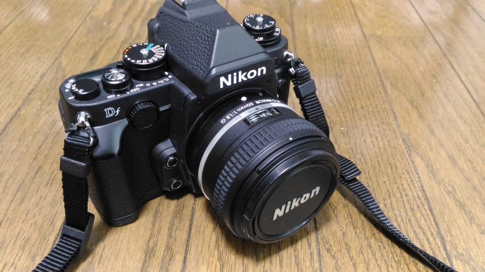
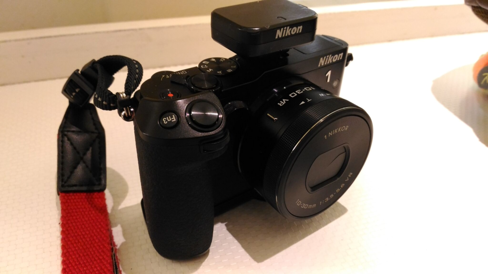

Nikon Df を買った & Nikon 1 V3 も強化
公開日：

今まで Nikon 1 V3 だけで頑張ってきたけど、どうにも画質に満足がいかないので、奮発して Df を買っちゃいました☆（ゝω・）vｷｬﾋﾟ
フルサイズの一眼レフは初めてかも。Df にしたのは、スペックよくわからん＆だったらカッコいいのがいいなーと。ダイヤルでグリグリいじれるのはやっぱり楽しい。使いこなせているかどうかは別にして。

- 出版社/メーカー: ニコン
- 発売日: 2013/11/28
- メディア: Camera
- この商品を含むブログ (4件) を見る
お値段はカメラのキタムラの中古（Aランクだったかな？）、レンズキットで20万切る程度。後継機が出ないせいか、スペック重視の機体でもないというわけか、待ってもあまり値が下がらない。中古も高めだけど、20万以内に収まるなら経費扱いにできるので、まぁ、いっか。程度もなかなか良かった。
キットについてくるレンズは、単焦点の 50mm f/1.8G。リーズナブルで割と良いレンズだと思うけれど、もう少し広角の単焦点と、200mm ぐらいまでをカバーできる望遠がほしいなー。
――で、2か月ぐらい使ってみたんだけど。
やっぱりお手軽な V3 もいいなーと思い直したので、こっちも少し強化。

プレミアムキットをバラしたものだろうか、グリップの新古品が単品で売っていたので、密林で購入。こういうグリップの効用って今まであんまり重要視していなかったけれど、確かにハンドリングはよくなった（V3 はグリップが小さすぎると思う。手首にかけるタイプのストラップをつけているが……）。重量が増えたけどだいぶ満足。もっと早く買っておけばよかったなーと思った。

Nikon グリップ GR-N1010 ブラック GRN1010BK
- 出版社/メーカー: ニコン
- 発売日: 2014/04/24
- メディア: Camera
- この商品を含むブログを見る
最新のファームウェアも当てた。
GPSユニット GP-N100を装着してカメラの電源をOFFにした場合、またはオートパワーオフで待機状態になった場合に、カメラのバッテリーが通常よりも早く消耗してしまう現象を修正しました。
2回も修理に出したんだけど（満タンにしたはずのバッテリーがすぐに切れて起動不能になるので）、結局不具合だったみたい。修理に出すときは GPS ユニットも外すからな……気づかないかもな。2回目に「異常は見受けられませんでした」って突っ返されたときはちょっとイラっとしたけど（#^ω^）
ファームウェアを最新にしてからは、3日放置したぐらいではバッテリーを消費しなくなったみたいだ。これで使おうと思ったときにバッテリーが切れてたり、放電で日付の再設定からやり直す羽目になったりしなくてすむかもしれない。